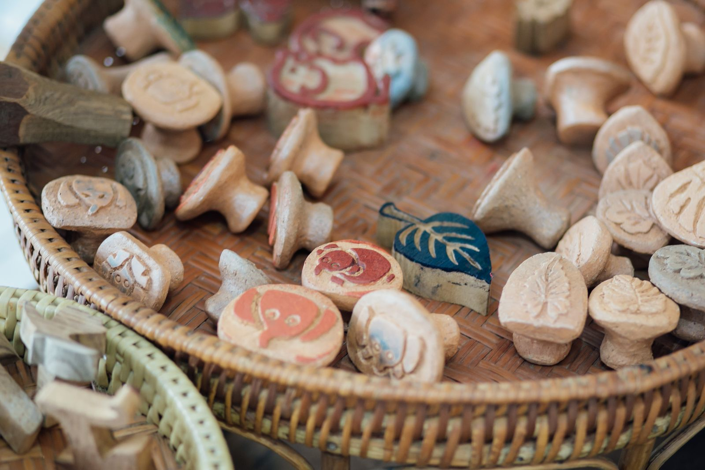
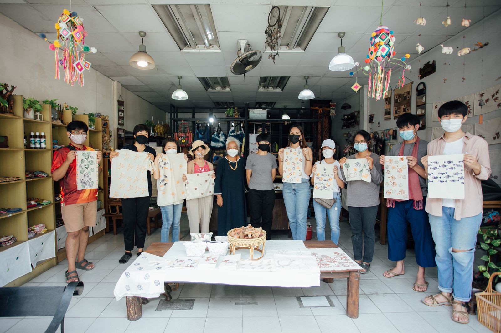

Made in Chang Moi was a community making programme in the Chang Moi district of Chiang Mai that paired ten long-standing neighbourhood businesses with young designers and artists. Over the summer each pair worked with the shop owner toward a prototype, tested at Chiang Mai Design Week 2021.
